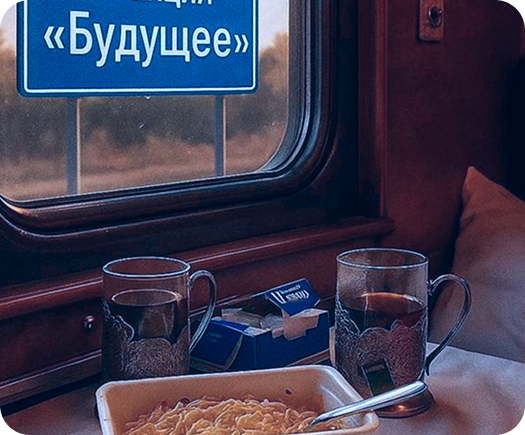
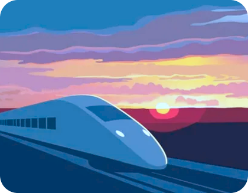
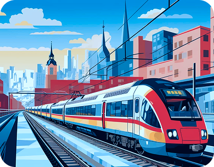
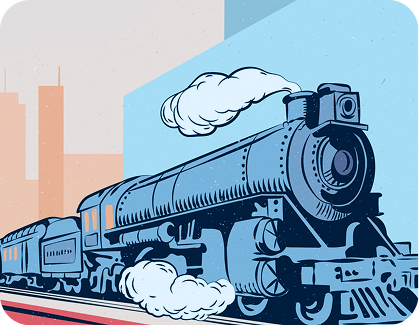

Путь от кризиса к ресурсу!
Каждое творческое начинание — это всегда осторожный, но смелый шаг в неизвестность. Однако зачастую самокритика превращает начинающего творца в жестокого судью, тем самым заточая в тени собственных сомнений и страхов.
С этой мыслью и создаётся наша выставка — чтобы показать, что за всеми великими достижениями скрывается первый робкий шаг. Каждое произведение важно, ведь это ступенька, а из них и состоит лестница мастерства. Творческий прогресс — это личное путешествие к самосовершенствованию, а не конкуренция.
Наш зритель — это душа, наполненная творчеством и страстью, а наша цель — подарить ей импульс для воплощения своих мечтаний. Пусть посещение этой выставки станет не просто очередным культурным событием в её жизни, а настоящим зарядом энергии, искрой, толчком к действию. Мы обращаемся к тем, кто боится не реализовать свои идеи, кто ощущает угрозу осуждения, недостаток таланта или страх перед чистым листом. В нашем пространстве мы хотим поговорить о сомнениях и победах, о внутренней борьбе и вере в себя.



Их проблема: страх «точки невозврата», страх ошибиться, потратить время впустую, не оправдать ожиданий и разочаровать близких.
Им нужна легитимация их страха сомнений. Они ищут подтверждение, что путь никогда не бывает линейным, что можно менять направление, что первый шаг — это не приговор, а всего лишь начало долгого пути.
Для них истории художников, которые сомневались и меняли свой стиль, — мощнейшее лекарство от тревоги.
Они чувствуют разрыв между «кем я являюсь» и «кем я мог бы быть». У них есть мечты, но их парализует страх.
Им нужен внешний толчок, подтверждение, что их страх — уникален, а является частью творческого процесса.
Они ищут разрешения на неудачу и вдохновения для первого шага.
Их проблемы — «синдром самозванца», страх «чистого листа», боязнь критики и непонимания.
Им нужны инструменты и истории, которые помогут преодолеть творческий блок.
Они хотят увидеть, что даже великие мастера через это проходили, и их «неидеальные» первые шаги стали основой для гениальных работ.
«Мы открываем эту выставку как пространство без осуждения. Здесь мы сознательно уходим от культа идеального результата, чтобы показать самое ценное — живой, трепетный и часто неловкий процесс становления».
«Мы против того, чтобы самокритика становилась тюремщиком для творца. Наша выставка — это гимн смелости начать. Мы показываем не шедевры, а шаги к ним. Потому что творчество — это не соревнование, а личное путешествие».
Тестова Варвара. Организатор
«Взрослея, каждый молодой человек сталкивается с вопросами поиска себя в мире. Это интересный, но пугающий процесс. Будущее выглядит туманным и страшным. Мы попытались отразить эти страхи, осмыслить, представив как увлекательное путешествие в поезде жизни».